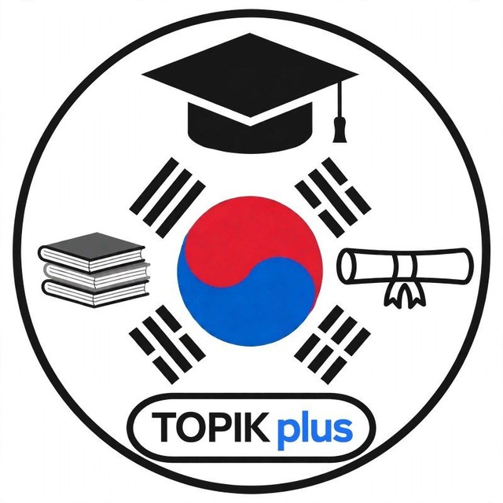

Foydalanish shartlari
Kuchga kirgan sana: 2026-yil 14-oktabr
1. Xizmat
TOPIK PLUS koreys tili kurslari, bepul sinov darsi va Telegram/YouTube'dagi bepul o'quv materiallarini taqdim etadi. «TOPIK PLUS bot» ilovasi markazning ichki avtomatlashtirish vositasi bo'lib, faqat TOPIK PLUS'ning o'z kanallari uchun ishlatiladi.
2. Botdan foydalanish
Botdagi ma'lumotlar tanishuv uchun beriladi. Kurs narxi, jadval va shartlar bo'yicha yakuniy ma'lumotni markaz administratori tasdiqlaydi. Botdan qonunga zid yoki boshqalarni bezovta qiladigan maqsadda foydalanmang.
3. Bonus dasturi
Kanalga do'st taklif qilish bonusi botdagi «🎁 Bonuslar» bo'limidagi qoidalar bo'yicha hisoblanadi. Soxta hisoblar hisobga olinmaydi; to'lovni administrator tekshirib, o'zi bog'lanadi.
4. Kontent
Videolar, matnlar va dizayn TOPIK PLUS'ga tegishli. Ularni shaxsiy o'qish uchun ko'rish va ulashish mumkin; tijorat maqsadida ruxsatsiz qayta joylash mumkin emas.
5. YouTube
Ilova YouTube API xizmatlaridan foydalanadi. YouTube foydalanish shartlari ham amal qiladi. Maxfiylik masalalari Maxfiylik siyosatida yoritilgan.
6. O'zgartirishlar va aloqa
Shartlar yangilanishi mumkin; yangi tahrir shu sahifada e'lon qilinadi. Savollar uchun: +998 94 330 31 18, @TOPIKplus_bot.
English summary
TOPIK PLUS provides Korean language courses and free learning content. “TOPIK PLUS bot” is our internal automation tool used only for our own channels. Bot information is introductory; final course details are confirmed by our administrator. Our content belongs to TOPIK PLUS. This app uses YouTube API Services, and by using it you agree to the YouTube Terms of Service. See our Privacy Policy for data practices. Contact: +998 94 330 31 18, @TOPIKplus_bot.